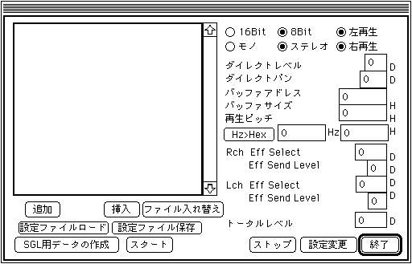

★SOUND Manual
★サウンドシュミレータマニュアル
★SOUND Manual
★サウンドシュミレータマニュアル
▲
戻る｜
進む▼
サウンドシュミレータマニュアル
PCMストリーム再生
- ここを選択すると以下のようなダイアログが表示されます。

- 追加・挿入
- 新しくPCMストリーム再生用のファイルをエントリーさせます。
ファイルはAIFFファイルとBINファイルが選択可能になっています。
- ファイル入れ替え
- ファイルに割り当てられた［ダイレクトレベル］、［ダイレクトパン］などの設定をかえずにファイルのみを変更します。
- 設定ファイルロード・設定ファイル保存
- エントリーしたファイルのフルパスとそのファイルに割り当てられた設定を保存ファイルに保存します。
- SGL用データの作成
- ヘッダー無しの純粋なPCMデータを作成します。
- スタート
- PCM Stream Play を設定に従い開始します。
- ストップ
- PCMストリーム再生を中止します。
- 設定変更
- 現在再生中のPCM データの設定を変更します。
設定変更に有効なパラメータは［ダイレクトレベル］、［ダイレクトパン］、［再生ピッチ］、［左右のEff Select］、［左右のEff Send level］です。
- Hz>Hex
- 周波数からOCTとFNSの混合データ（ターゲットが認識できる形式）に計算してくれます。
- 終了
- PCM Stream Playモードを終了してダイアログを閉じます。
各種パラメータについて
- ○16Bit ○8Bit
- 再生するPCMデータが16itか8Bitかを選択します。
- ○モノ ○ステレオ
- 再生するPCMデータがモノラルかステレオかを選択します。
- ○左再生
○右再生
- ステレオファイルの時のみ有効で右チャンネル、もしくは左チャンネルのみの再生を行います。
（ただしアプリケーションで管理しているのでドライバー、ハード等にこの機能はありません。）
以上３つのデータはデータを読んだ際にその設定が内包されたものであれば自動的に設定されます。
- ダイレクトレベル
- 再生時の音量を設定します。設定値は0→8までです。
- ダイレクトパン
- 再生時のPanを設定します。設定値は0→31までです。ステレオ時には無視されます。
- バッファアドレス
- 再生をするPCMデータの格納された先頭アドレスです。0→0xffff0までで１の位の設定値は無視されます。
- バッファサイズ
- 再生をするPCMデータのバッファを設定します。設定値は0→0xf000までで0x1000単位で設定します。
この値はサンプル数を示しています。
- 再生ピッチ
- 再生ピッチを設定します。設定値は0→0xffffです。
周波数による再生ピッチの設定は左側のエディットテキストで周波数を設定し［Hz>Hex］ボタンで右側のエディットテキストに計算結果を表示させます。
- Eff Select
- 左右各々のチャンネルのエフェクトを選択します。設定値は0->15までです。
- Eff Send Level
- Effect Send Levelを設定します。設定値は0→7までです。モノラルの場合これらEffect関係は右チャンネルで設定します。
- トータルレベル
- トータルレベルの設定を行います。
［ダイレクトレベル］よりも細かなボリューム設定が可能です。設定幅は0→255です。
▲
戻る｜
進む▼
★SOUND Manual
★サウンドシュミレータマニュアル
Copyright SEGA ENTERPRISES, LTD., 1997